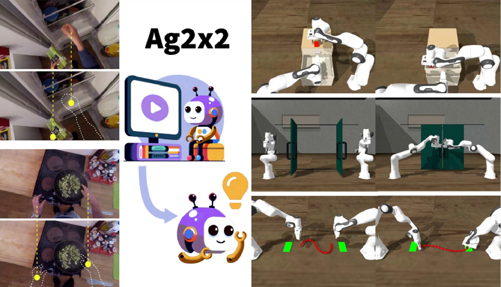

|
Ziyin Xiong | 熊梓因 I am a senior undergraduate student at Tong Class (founded and led by Professor Song-Chun Zhu) in Yuanpei College, Peking University, majoring in Artificial Intelligence. At Peking University, I am advised by Prof. Yixin Zhu. In 2023 fall, I visited UC Berkeley and was honored to be advised by Prof. Masayoshi Tomizuka. Currently, I collaborate with Dr. Siyuan Huang and Dr. Tengyu Liu at the General Vision Lab in BIGAI. Previously, I had the privilege to work with Prof. Xiaotie Deng and Prof. Yuqing Kong. |

|
|
Research Interest My research goal is to develop generalizable robot skill learning and equip robots with the ability to reason and solve complex tasks in a manner similar to that of humans. I am especially interested in the intersection of robot learning, robot vision, and reinforcement learning. |
|  |
Ag2x2: A Robust Agent-Agnostic Visual Representation Boosts Zero-Shot Learning of Bimanual Robotic Manipulation
Ziyin Xiong*, Yinghan Chen*, Puhao Li, Yixin Zhu, Tengyu Liu, Siyuan Huang arXiv, 2024 Paper / Project / Code We present Ag2x2, a framework that advances the autonomous acquisition of bimanual manipulation skills through agent-agnostic and coordination-aware visual representations that jointly encode object and hand motion patterns. |
|
Design and source code from Jon Barron's website. |